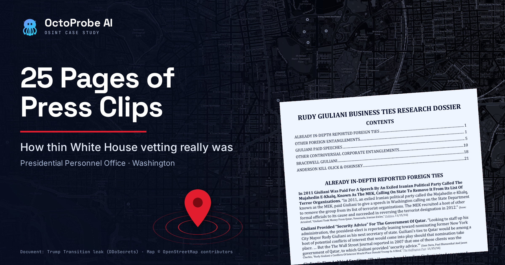
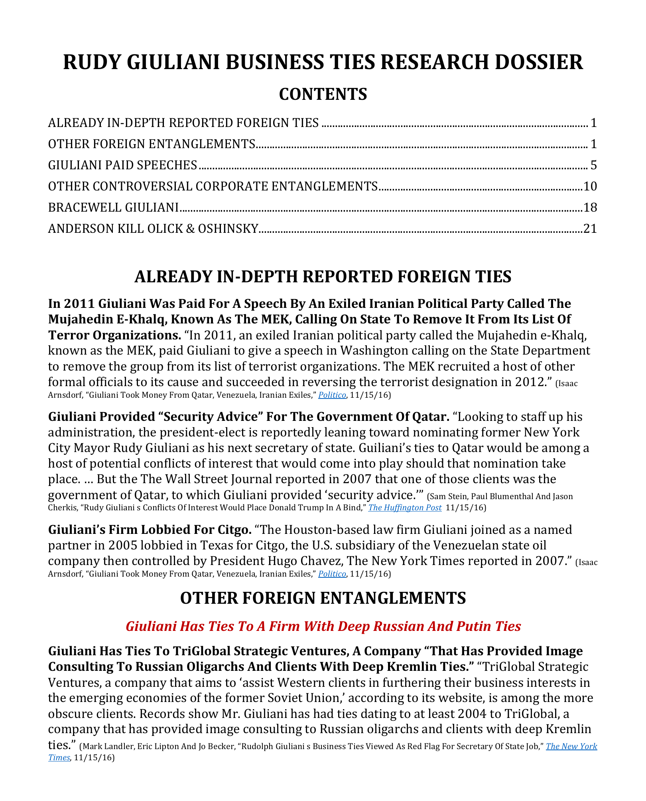
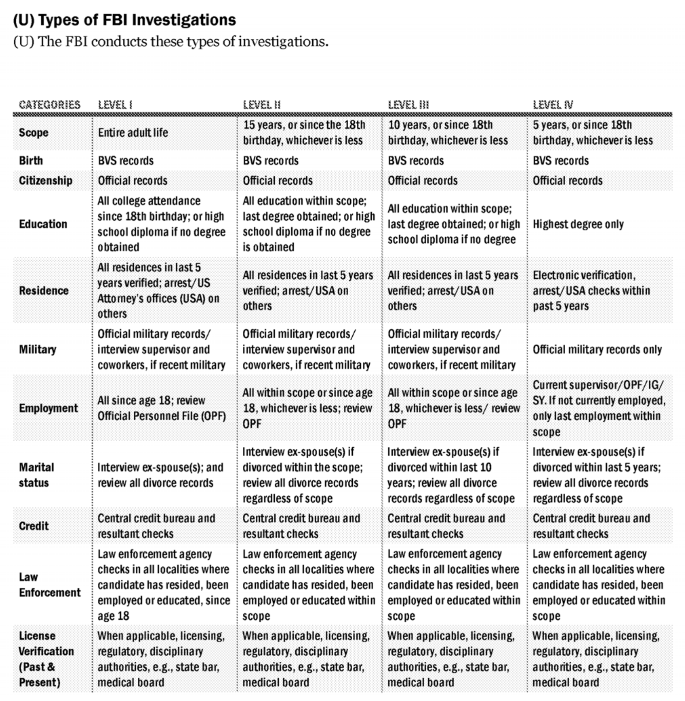
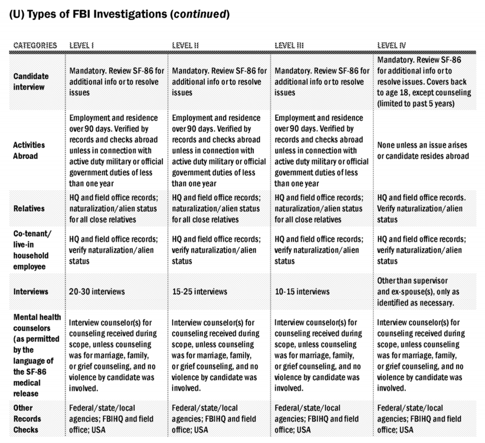
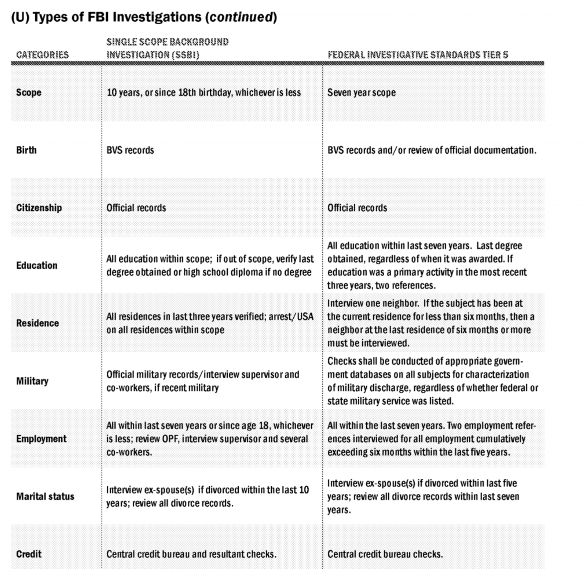
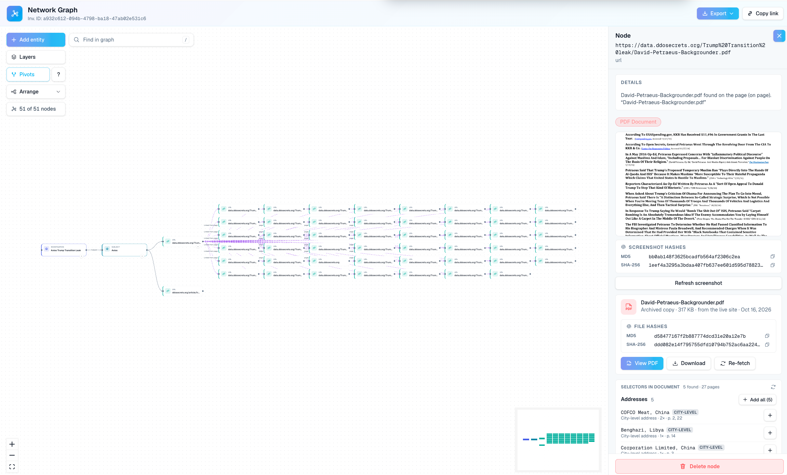

The White House vetted its 2016 appointees with newspaper clippings. Leaked transition files prove it. And the federal system meant to dig deeper rewards speed and contracts over depth.
The Presidential Personnel Office (PPO), the White House shop that recruits and screens political appointees, controls more than four thousand jobs. Its 2016 files are public. They show a process built for speed, not depth.
Take Rudy Giuliani. His business-ties research file runs twenty-five pages. Nearly every line is a quote from a news story.
The Leak
Distributed Denial of Secrets (DDoSecrets), a nonprofit that archives leaked data, posted the set. It describes the files as “Dozens of documents from the Trump administration transition, including backgrounds and opposition research on potential Trump appointees.”
Axios first reported on the documents in 2019. It wrote that “Trump's frazzled transition team foisted the job of political vetting onto the Republican National Committee.”
The Republican National Committee (RNC) is the party’s campaign arm, not a background-check agency. Axios reported: “The RNC's team of about two dozen researchers, almost all of whom were in their 20s, faced trying circumstances.”
Glaring Issue One: Little Vetting at All
One vetter told Axios: “Totally inadequate resources for the overall process. ... We would probably run through dozens [of contenders] a day.”
Dozens a day leaves minutes per candidate. And Axios found nothing behind it: “Nobody we spoke to who worked at the senior levels of the transition could point us to any additional political vetting that was done before Trump announced his nominees.”
The cost showed up fast. Labor pick Andrew Puzder withdrew after an old domestic-abuse allegation, which his ex-wife later retracted, resurfaced. Axios wrote: “The RNC vetters overlooked a local news report on her allegations.”
The RNC pushed back. Spokesman Mike Reed said: “Individuals selected for high-level administration jobs would have gone through more thorough background checks by lawyers, law enforcement agencies, and ethics officials before formally assuming their role.”
Glaring Issue Two: Clippings, Not Investigations
The leak’s index holds forty-four backgrounders. OctoProbe downloaded every one and counted pages. The median file runs thirteen pages. The shortest runs four. The longest runs forty. The average is about fifteen.
The Giuliani business-ties research file is twenty-five pages and 240 kilobytes. Its fifty-five citations point almost entirely to press coverage: The New York Times, the Associated Press, The Wall Street Journal, Bloomberg, Forbes, and Politico, among others.

The RNC itself called the files “initial pre-interview briefings put together to inform the transition team of top-line issues of note in the candidates' background.” That’s the point. A top-line brief is where vetting should start, not end.
Missing from the file: asset searches, court dockets and litigation history, property and corporate records, police reports obtained through the Freedom of Information Act (FOIA), breach data, and open-source intelligence (OSINT), meaning research from public data such as social accounts, registries, and archives.
A man with Giuliani’s decades of foreign clients, law firms, and consulting deals would fill hundreds or thousands of pages under that kind of review. The process needs modernizing.
Read the full file below.
Glaring Issue Three: Vetters Without Credentials
The office doing the vetting was thin, too. The Washington Post reported in 2018: “From the start, the office struggled to keep pace with its enormous responsibilities, with only about 30 employees on hand, less than a third of the staffing in prior administrations, The Post found.”
The problem carried into 2025. The New York Post reported that PPO director Sergio Gor “has yet to submit official paperwork about his own background needed for a permanent security clearance, according to multiple sources.”
The paper said Gor vetted staff “by poring over old tweets, political donations and remarks to ensure loyalty to the president.” It added: “He currently has an interim security clearance, as do some other Trump officials who are awaiting the completion of background checks.”
The White House disputed the story. Counsel David Warrington said: “His security clearance is active, any insinuation he doesn’t maintain a clearance is false.”
Sources familiar with the office said core PPO staff did not hold security clearances and had no investigative training. The people screening appointees had never been screened that way themselves.
Glaring Issue Four: Who Vets the Cleared?
Many appointees arrive with federal careers, some of them in classified work. The scope that normally covers that kind of access is far deeper than a stack of clippings.
A security clearance is government permission to see classified information. Top Secret access, including Sensitive Compartmented Information (SCI), intelligence held in tightly controlled compartments, requires a Tier 5 background investigation, the top level of federal screening.
Tier 5 replaced the Single Scope Background Investigation (SSBI) in fiscal year 2017, according to the Defense Counterintelligence and Security Agency (DCSA), the Pentagon agency that runs most federal background checks. It starts with the Standard Form 86 (SF 86), a long questionnaire on residences, foreign contacts, finances, and drug use, per the DCSA case-type table.
The FBI laid out what deep screening looks like in its own 2016 transition briefing book, released through FOIA on the FBI Vault. Three pages chart the bureau’s investigation levels side by side.
The deepest, Level I, covers the “Entire adult life” and calls for “20-30 interviews.” Every level checks credit, police records in each place a candidate lived, licensing boards, relatives, and time abroad.



Tier 5 itself carries a “Seven year scope.” Investigators interview a neighbor, check two employment references, and review divorce records. None of that appears in a clipping file.
In January 2025, the president ordered that a list of White House staff be “hereby immediately granted interim Top Secret/Sensitive Compartmented Information (TS/SCI) security clearances for a period not to exceed six months”. That order put access before the investigation. If the investigation trails the access, who checks the people who already handled secrets?
The Contract Problem
Background checks are big business. The record shows the government keeps paying for volume and speed.
In January 2018 the Government Accountability Office (GAO), the investigative arm of Congress, put the clearance system on its High Risk List. GAO said “executive branch agencies are unable to investigate and process personnel security clearances in a timely manner, contributing to a significant backlog of background investigations, totaling more than 700,000 cases as of September 2017.”
It also found that “government-wide measures for the quality of background investigations have not yet been established”. Speed was measured. Quality was not.
DCSA inherited the backlog. Federal News Network reported in 2025 that the agency cut its caseload “from a peak of 290,000 cases last September to 222,000 in May.” Even then, “the average end-to-end processing time for background investigations is 243 days”.
Contractors have gamed the system before. The Justice Department alleged that U.S. Investigations Services (USIS), which did background checks for the Office of Personnel Management (OPM), “deliberately circumvented contractually required quality reviews of completed background investigations in order to increase the company’s revenues and profits.”
The practice, the government said, involved “releasing cases to OPM and representing them as complete when, in fact, not all the reports of investigations comprising those cases had received a contractually-required quality review.” USIS and its parent agreed in 2015 to forgo at least $30 million. The Justice Department noted that “The claims resolved by the settlement agreement are allegations only and there has been no determination of liability.”
A top Justice official put it bluntly: “Shortcuts taken by any company that we have entrusted to conduct background investigations of future and current federal employees are unacceptable,” said Benjamin C. Mizer.
Political vetting runs on a separate track, and it is even looser. In 2016 it was handed to a party committee, the RNC, with “about two dozen researchers”. Transitions lean on allies and their networks, friends of friends, not on firms chosen for investigative depth.
OctoProbe’s analysis: both tracks reward the same thing. Contracts and slots go to whoever moves cases fastest or knows the right people. Nobody wins business by turning in the deepest file.
What Real Vetting Pulls
Twenty-five pages of clips cannot cover a career that spans decades. A real review pulls primary records, the documents themselves rather than stories about them.
- Federal court filings. PACER (Public Access to Court Electronic Records) holds federal lawsuits, bankruptcies, and criminal cases.
- State court dockets. Most lawsuits, divorces, and liens are filed in state courts, not federal ones.
- Securities and money. EDGAR, the Securities and Exchange Commission’s filing database, shows board seats and stock deals. OGE Form 278, the public financial disclosure senior officials file with the Office of Government Ethics, lists assets, income, and debts.
- Corporate structures. State business registries and beneficial-ownership records show who really owns a company.
- Sworn testimony. Affidavits and depositions in old lawsuits capture what a person said under oath.
- Property and liens. County deed and lien records show holdings, debts, and unpaid taxes.
- Police reports. FOIA and state open-records requests can pull incident reports that never made the news.
![Infographic titled How Deep Real Vetting Goes. Eight stacked layers run down a Depth of vetting axis. The top layer, highlighted in red as what the 2016 backgrounders covered, is press clippings: the 2016 backgrounders, 25 pages of news stories, op-eds, and wire reports. Below it: federal records (SEC EDGAR filings, OGE Form 278 disclosures, IRS tax liens, federal contract awards); state records (corporate registries, professional licenses, UCC filings, state court dockets); local records (property deeds, building permits, county court cases, local liens); FEC filings (individual donations, PAC ties, campaign committee roles); PACER and judicial records (federal dockets, affidavits, depositions, bankruptcies); FOIA records (police reports, agency files, inspector general records); and, deepest, breach and historical data (leaked accounts, archived web pages, old handles).](assets/vetting-data-layers-depth-infographic-mobile.png)
Breach Data and the Blackmail Risk
The deepest layer is breach data, records stolen from websites and dumped online. It shows the reputational risks no clippings file will ever catch.
When the cheating site Ashley Madison was hacked in 2015, FedScoop reported: “More than 15,000 government and military email domains are among the 36 million email addresses released Tuesday night as part of the massive data breach associated with the online infidelity site.” It cautioned: “Not every address is necessarily tied to an actual government employee.”
Security reporter Brian Krebs wrote: “The leaked AshleyMadison data could also be useful for extorting U.S. military personnel and potentially stealing U.S. government secrets, experts fear.”
Cheating sites are one category. Adult sites and gambling sites are others. Adversaries mine these dumps for leverage. A vetting team that never looks will learn about the problem from a foreign service, or from a blackmailer.
This post makes no claim that Rudy Giuliani or anyone else named here held an account on any such site.
What Modern Tooling Captures
OctoProbe pointed its crawler at the leak itself. In one round it ran 136 queries and built a graph of fifty-one nodes and fifty links.
Forty of those nodes are the leaked PDF backgrounders. Each document is stored as an archived copy with MD5 and SHA-256 hashes, digital fingerprints that prove a file hasn’t changed since capture.
Every node also links to its live page, its Wayback Machine snapshots, and its latest Archive.ph copy. If a file is altered or pulled, the record survives.


That is the floor, not the ceiling. A tool that fingerprints and archives forty files on its own can just as easily pull dockets, deeds, and corporate filings. The 2016 vetters worked from clippings.
Bottom Line
The 2016 vetting files were short, fast, and built from news stories. The office running them was small and young. Nine years later, its director was reported to be working on an interim clearance.
The deeper system is no cure. GAO flagged it as high risk, its backlog has topped 290,000 cases, and one contractor was accused of faking quality reviews to boost profits.
Real vetting means dockets, deeds, filings, and breach data. Until contracts reward depth, appointees will keep getting clippings.
Disclaimer
This analysis relies on leaked documents published by DDoSecrets and on public reporting. It alleges no wrongdoing by anyone named.